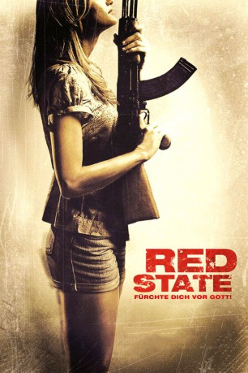

#1520 Red State - Fürchte Dich vor Gott!
Alternativ: Red State
 
 IMDB-Wertung: 6.2 / 10
IMDB-Wertung: 6.2 / 10  Metascore: 50
Metascore: 50 
Eine Gruppe Jugendlicher kann es in Red State kaum erwarten. Online haben sie sich mit einer Frau zum Sex verabredet, irgendwo in einem kleinen Städtchen im mittleren Westen der USA. Was sie nicht wissen, ist, dass in diesem Ort christliche Fundamentalisten um einen wahnsinnigen Prediger auf sie warten, um Gottes Rache an ihnen zu vollziehen. Mit Red State geht Kevin Smith in vielerlei Hinsicht neue Wege. Nach seinem Flop Cop Out – Geladen und entsichert drehte er Hollywood den Rücken zu und widmete sich ganz diesem Projekt, dass mit minimalem Budget wieder ganz aus seiner Hand stammt. Wie zum Beginn seiner Karriere stammen Drehbuch, Schnitt und Regie von ihm. Allerdings hat sich seit seinen fr��hen Tagen einiges geändert. Obwohl auch Red State bei seiner alten Produktionsfirma View Askew entsteht, ist sein langjähriger Wegbegleiter Scott Mosier nicht als Produzent am Film beteiligt.
Jahr: 2011
Dauer: 88 Minuten
FSK: 18
Land: USA Studio: SModcast PicturesTonspuren: DTS - ,
Untertitel: Deutsch,
Auflösung: 720p (1280x688) Größe: 4454 MB
Genre: Action, Thriller, Horror, Krimi
Regisseur:  Kevin Smith
Kevin Smith
Drehbuch: Kevin Smith
Soundtrack:
Darsteller:
 Michael Angarano als Travis
Michael Angarano als Travis Nicholas Braun als Billy-Ray
Nicholas Braun als Billy-Ray- Ronnie Connell als Randy
- Kaylee DeFer als Dana
 Kyle Gallner als Jarod
Kyle Gallner als Jarod Anna Gunn als Travis' Mother
Anna Gunn als Travis' Mother Matt Jones als Deputy Pete
Matt Jones als Deputy Pete John Lacy als Travis' Father
John Lacy als Travis' Father Catherine McCord als News Reporter
Catherine McCord als News Reporter- Alexa Nikolas als Jesse
 Stephen Root als Sheriff Wynan
Stephen Root als Sheriff Wynan Cooper Thornton als Plastic Wrap Man
Cooper Thornton als Plastic Wrap Man- Betty Aberlin als Abigail
 Kerry Bishé als Cheyenne
Kerry Bishé als Cheyenne Ralph Garman als Caleb
Ralph Garman als Caleb Melissa Leo als Sara
Melissa Leo als Sara- Molly Livingston als Fiona May
 James Parks als Mordechai
James Parks als Mordechai Michael Parks als Abin Cooper
Michael Parks als Abin Cooper Haley Ramm als Maggie
Haley Ramm als Maggie- Jennifer Schwalbach Smith als Esther
- Elizabeth Tripp als Melanie
- Rose Colasanti als Believer
- Shawn Driscoll als Believer
- Carryl Lynn als Believer
- Scott Nifong als Believer
- Alyssa Petersen als Believer
 Gary Sievers als Believer
Gary Sievers als Believer Kevin Alejandro als Harry, the Tactical Agent
Kevin Alejandro als Harry, the Tactical Agent Marc Blucas als ATF Sniper
Marc Blucas als ATF Sniper Patrick Fischler als Agent Hammond
Patrick Fischler als Agent Hammond John Goodman als Joseph Keenan
John Goodman als Joseph Keenan Kevin Pollak als ASAC Brooks
Kevin Pollak als ASAC Brooks- David Marciano als Agent Eccles
 Damian Young als Agent Carol
Damian Young als Agent Carol- Robert Zimiga als ATF Agent
- Jeffrey T Ferguson als Firefighter , uncredited
 Molly Hagan als Janet Keenan , uncredited
Molly Hagan als Janet Keenan , uncredited- Robert Paul Taylor als Prisoner , uncredited
- Deborah Aquila als Mrs. Vasquez
- Joey Figueroa als Route 9 Friend
- Ash Barnett als Believer
- Taylor Briggs als Believer
- Bill Cleavelin als Believer
- Ivy Klein als Believer
- Sadey Paige Nifong als Believer
- Marnie Shelton als Believer
- Eric Andris als ATF Agent
- Dylan Belardinelli als ATF Agent
- William Fix als ATF Agent
Datei: X:\FSK18-2011\Red State - Fürchte Dich vor Gott! (2011, FSK18, 1280x688).mkv seit 13.07.2015
Festplatte: FSK18
 Es gibt insgesamt 30 Filme in der Gruppe 'FSK18-2011'
Es gibt insgesamt 30 Filme in der Gruppe 'FSK18-2011'